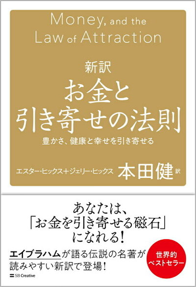
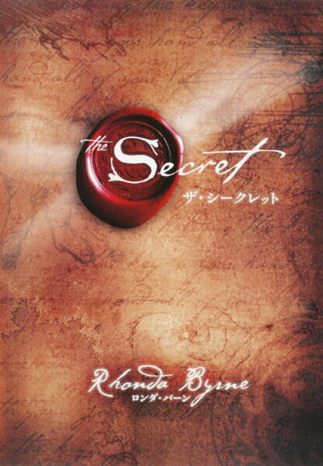
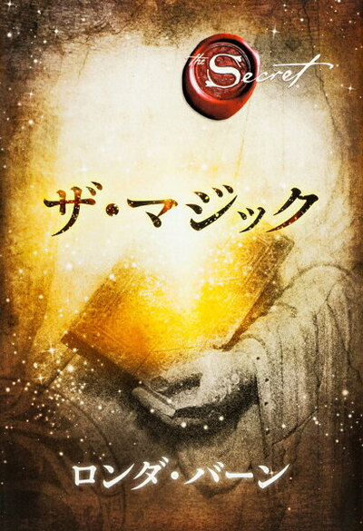
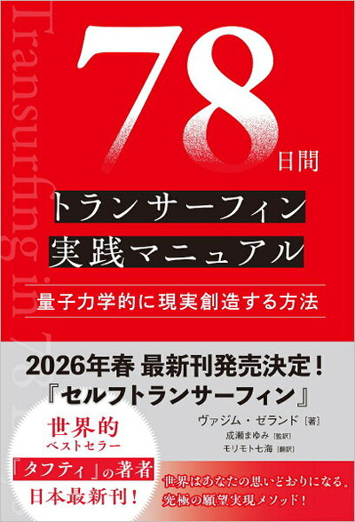
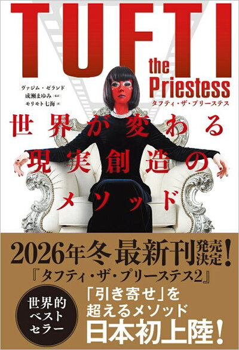
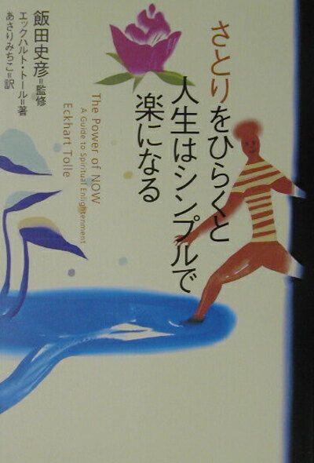
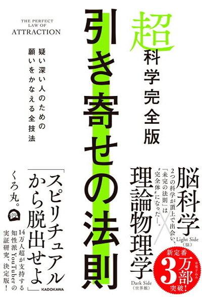
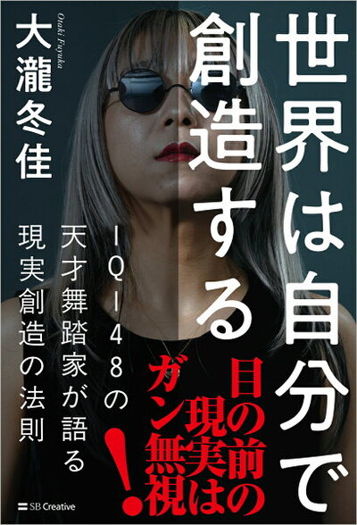
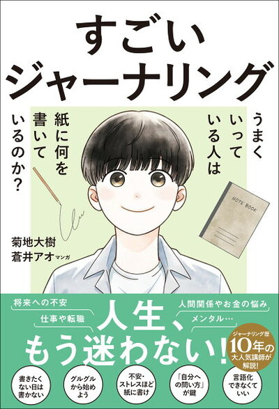

よしりん さん
主催少し緊張していますが、楽しみでもあります。たくさんお話しましょうね♪前日のチャットより プロフィール →
雨の予報が出ていた水曜日。神戸オフィスのテーブルを囲んで、「わたしの引き寄せ」と「やっていること」を語り合いました。聞く専門の人も、初めましての人も。そのときの言葉を、あとから何度でも読み返せるように。
参加チャットに書いてくれた言葉と一緒に。プロフィールはリベシティの中で開きます。
少し緊張していますが、楽しみでもあります。たくさんお話しましょうね♪前日のチャットより プロフィール →
皆さんでいろんな引き寄せトークしましょうー🙌募集が満員になった夜のチャットより
当日、引寄せのエピソードあれば聞かせてください。よしりんさんからのお迎えの言葉 プロフィール →
わくわくとドキドキが大好きなので、素敵なオフ会だなぁ〜〜〜と思いました参加のあいさつより。当日は「忘れっぽいから毎日が新鮮」と自己紹介 プロフィール →
人生やりたいこと全部やるリベネームから プロフィール →
テーマもとても興味があり楽しみにしています♡参加のあいさつより プロフィール →
当日楽しみにしております。参加のあいさつより プロフィール →
「すみません」より「ありがとう」を先に言うようにしたら、少しずつ流れが良くなってきた当日の自己紹介より プロフィール →
10月の会のあと、そのままこの会にも来てくれました。参加の記録より プロフィール →
2回目があるのなら、ぜひ、その時によろしくお願いいたします✨当日のチャットより プロフィール →
前半（13:00〜14:00）の自己紹介と、最初の話から。
10月の娘さんの結婚式は、台風が上陸した日。朝から大雨で、雨なら中止の「みんなで風船を飛ばす」演出があったのに、式の1時間ほど前にぴたっと止んで、全員で飛ばせた。
先週の金沢では、雨のあとに二重の虹。そして、リベでこうして皆さんと巡り会えたことが、いちばんの引き寄せ。
職場の狭い通路で道を譲ってもらったとき、「すみません」ではなく「ありがとう」と言うようにした。そこから少しずつ流れが良くなって、人生が変わってきた実感がある。
転勤で知らない土地に来て、リベに入ったら、知っている人が地元にいた頃より爆発的に増えた。
怖かったけれど、思い切って仕事を手放した。そこからちょっとずつ手放すことを覚えて、気持ちが自由になった。
1年前に「来年ここに行く」と決めて口にしたら、一緒に行く人も、現地を案内してくれる人も現れた。言葉にすると、叶いやすい。
1年半くらい前から、周りに「引き寄せが好き」と話していたら、そういう話をふつうにできる人が集まってきた。好きを語るのは大事。迷ったときは、自分の直感と「何がしたいか」のワクワクに従う。
リベ大フェスのステージで聞いた話。「今日から何があってもWebライターとして生きる」と決めて、準備が整う前から応募していた人がいた。やっぱり夢が叶う人は決めてはる。浅見帆帆子さんの『決めれば、叶う。』が大好き。
服や思い出の品を手放すのは、正直苦しい。でも、ここに執着しているのは新しいものを見ようとしていない自分かも。写真に撮ってから手放すと、思い出はスマホに残る。
席は空く日も空かない日もある。でも、空いた日だけを覚えていれば「わたしは運がいい人」になれる。脳は「ついてる」と思ったら、ついてることを探しはじめる。
自分ではどうしようもない理由で、動けなくなる時期もある。時間とお金とタイミングが全部そろう日は来ないかもしれない。だから、動ける今を大事にしたい。今日ここで皆さんと会えたのも、この街に引っ越してきたからこそ。
14:00〜15:00。話はあっちこっちに飛びながら、気づけばみんなの小さな習慣の見せ合いに。
「〜がほしい」とずっと言っている人は、ずっとほしいまま。「いる」のが当たり前の世界で生きている人は、いなくなっても自然と「いる」方へ動いていく。基準がもう、そっち側にある。
寝る前には、亡くなったお母さんとご先祖さまに「今日も1日ありがとうございました」。朝は起き上がる前に「今日も1日お願いします」。信心深いわけじゃないけれど、毎朝毎晩つづけている。
「天気が良くて気持ちよかった」「電車で座れた」。そんなことでいいから、良かったことを残して、あとで見る。「やった」「最高」と声に出すのもいい。言葉にすると、言霊になる。
成功している人がやっているなら、ほんまに信じているかは置いておいて、お遊びでやってみる。寄付は「自分は寄付ができる人」というセルフイメージになって、お金が巡りはじめる。
悪いことを考えはじめたら、ぱんっと区切って「これ以上考えない」。また浮かんだら、またそこで終わり。繰り返すうちに、ぐるぐるが減っていく。
夜に悩むのは、夜がそういう時間だから。歩いたり、AIにしゃべったり、人にしゃべってまとめてもらったり。整え方は人それぞれ。
考え方には一人ひとり癖がある。結果が当たっているかどうかより、「これ、どう？」と話すきっかけにするのが大事。未来を想像するのが好きな人もいれば、そうじゃない人もいる。何が心地いいかは、人によって違う。
「もう年やから」「今さら」と言い合う輪に、前ほどなじめなくなった。似た心の状態の人が寄ってくるもので、どっちが上でも下でもない。寂しい気持ちもあるけれど、それは自分が変わったしるし。
コンサートにも旅にも、一人で来ている人はたくさんいる。一人で来た人どうしで仲良くなって、そのあともずっと一緒に。リベと一緒やね。
「いろいろお話ししていただいて、ありがとうございました」。よかったら、みんなのおすすめのパワースポットや、読んでよかった本をシェアしてください。そういう本を読むのが、すごく好きなので。
会で出た「もう二度と考えない」「夜はそういう時間」。本棚の本と動画で、同じ場面のやり方を探してみました。

寝る前に心配事を考えると、翌朝その気分から1日が始まってしまう。だから眠る前に人生のポジティブな側面を探し、いい気分で眠りにつく。
出典：「ポジティブな側面」寝る前のプロセス編（Page 85）
毎晩寝る前にその日を振り返り、思い通りにいかなかった場面があれば、ワクワクしながら頭の中で望む形に再生し直す。
出典：p.120–121
ベッドに入る前に魔法の小石を握り、その日の良かったことを思い出して、いちばんの出来事に「ありがとう」。
出典：2日目「魔法の小石」（p.055–056）
恐れには、セーフティネットや代替案を用意しておく。不安や心配は、頭の中で抱えるより、行動することで解消される。
出典：10日目「解放」（page-088–089）
イライラや不安に襲われても、その感情と闘わずに観察を始める。じっくり見ると、恐怖はかえって小さくなる。
出典：Page 250
考えが頭の中でかけまわる時は、呼吸に焦点を当てる。就寝前や起きぬけには、寝床で手・足・おなか…と体に順番に意識を向ける。
出典：Page 205–206
嫌なことがあった日でも、寝る前に「今日も無事に終わった。いろいろ学べた。ありがとう」。言葉で脳に「幸せの予約」を入れる。
出典：PDF画面 115–116
1日の終わりに静かに自分と向き合う。眠る前は身体の感覚と呼吸を感じ、好きな香りや音楽でゆるめて、「私はもう大丈夫です」と心の中で伝える。
出典：「本音で生きるための自分会議」（Page 204–205）
寝る前は「これについて考えたいな」とノートに一言だけ書いて寝る。眠っている間に脳が続きを考えてくれる。言葉にならない時は、紙にグルグル書きでもいい。
出典：p.130–131、p.172–174起きてベッドの中で、自分が穏やかで幸せになる言葉を数秒。無理なプラス思考ではなく、そう思えなくてもいい。何もしない時間に、成功も失敗もない。
出典：浅見帆帆子 HOHOKO CLUB（YouTube）帰り道に、ひとつ持って帰ってください。
その夜と次の朝、参加チャットに書いてくれた感想から。
日々感謝の気持ちを持って、自分がご機嫌さんに過ごすことが大切ですねー「おかわりオフ会、あったら嬉しすぎます」とも
叶う途中のことは考えないで叶ったことを明確にイメージすると良いと伺い、妄想やってみようと思いました🎵よしりんさんの話から
よしりんさんからも「第2弾も、第3弾も」。ララさんも「2回目があるなら、ぜひ」と言ってくれました。おすすめのパワースポットや読んでよかった本、今日の「行ける理由3つ」や「ありがとうを先に」を試してみた話を、次の会で聞かせてください。
参加チャットの書き込みと、当日の録音（13:00〜15:00）から作りました。言葉は聞き取りをもとに、意味を変えない範囲で整えています。